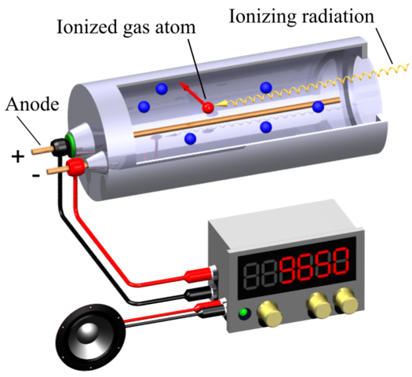

What is a Geiger counter?
It is an instrument used for detecting and measuring ionizing radiation. Geiger counter is widely used in applications such as radiation dosimetry, radiological protection, experimental physics and nuclear industry. Depending on the configuration it can detect alpha, beta particles, X-rays and gamma rays, using the ionization effect produced in Geiger-Muller tube.
Principle of operation
A Geiger counter consists of a Geiger-Muller tube and processing electronics. The tube is filled with an inert gas, for example, helium, neon or argon and there is a thin tungsten wire. The gass is filled at a low pressure, to which a high voltage is aplied. When radiation enters the tube, it causes ionization, splitting gas molecules into ions and electrons. The electrons, being negatively charged, are instantly attracted by the high-voltage positive wire and as they zoom through the tube collide with more gas molecules and produce further ionization. The result is that lots of electrons suddenly arrive at the wire, producing a pulse of electricity that can be measured on a meter.
Main parts of Gieger counter
- Geiger-Muller tube
- Thin tungsten wire
- Detector
Main advantages of Geiger counter
- Relatively cheap, either when manufactured in the laboratory or as a commercially available component
- It requires little in the way of special electronics to make it work
- The later halogen-filled versions have quite long working lives
History
German physicist Hans Geiger (1882–1945) developed the idea in 1912 while working with Ernest Rutherford, the physicist who "split the atom" (proved experimentally that atoms consisted of other, smaller particles). Back in Germany, sixteen years later, Geiger greatly improved the instrument with the help of a colleague named Walter Müller, which is why Geiger counters are often called Geiger-Müller counters (or Geiger-Müller tubes).
Additional information: Here